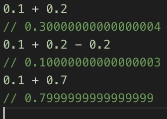
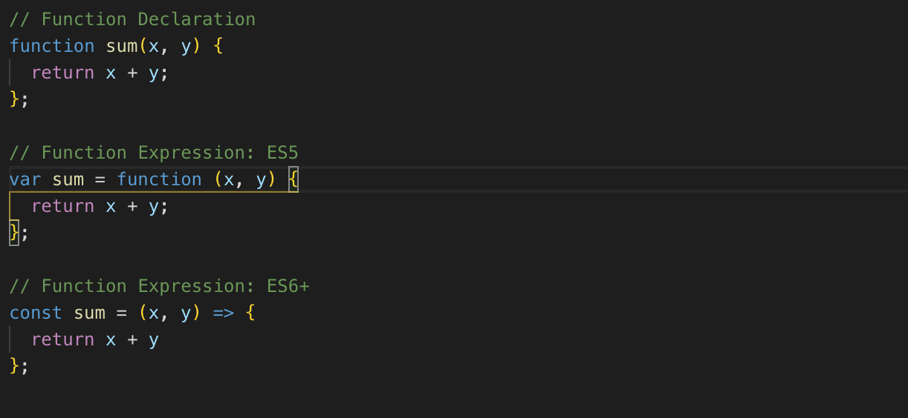
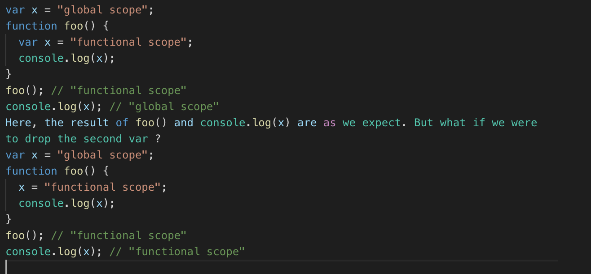

Math.max() > Math.min() === false
IF no arguments given...Math.min() returns infinity and Math.max() returns -infinity
This is because IF -inifinity was the default argument of Math.min(), then every result would be -inifinity which would be useless!
In short, it’s to do with how accurately JavaScript can store floats in binary.
This is unlikely to cause problems if you’re performing simple equations without the need for a high degree of accuracy. But it can cause headaches even in simple applications if you need to test for equality.
- Fixed Point. For example, if you know the maximum precision you’ll need (for example, if you’re dealing with currencies), you can integer type to store the value. So instead of $4.99 , you could store 499 and perform any equations on that. You could then display the result to the end-user using an expression like result = (value / 100).toFixed(2) , which returns a string.
- Binary Coded DecimalsIf precision is really important, another option is to use the Binary Coded Decimals (BCD) format, which you can access in JavaScript using this BCD library. Every decimal value is stored separately in a single byte (8 bits). This is inefficient, as a byte can store 16 separate values and this system only uses values 0–9. However, if precision is important for your application, it may be worth the trade-off.
Solutions:
Why does 018 Minus 017 = 3?
The fact that 018 — 017 returns 3 is a result of silent type conversion. In this case, we’re talking about octal numbers.
You’re likely aware of the use of binary (base-2) and hexadecimal (base-16) number systems in computing, but octal (base-8 ) also has a prominent place in the history of computers: in the late 1950s and 1960s, it was used to abbreviate binary, cutting material costs in what were highly expensive systems to manufacture!
But what’s octal useful for in modern programming languages? Octal has an advantage over hexadecimal for some use cases because it doesn’t require any non-numerical digits (using 0–7 rather than 0–F). One common use is in file permissions for Unix systems, where there are exactly eight permission variations
In JavaScript, the prefix 0 will convert any number to octal. However, 8 is not used in octal, and any number containing an 8 will be silently converted to a regular decimal number. Therefore, 018 — 017 is in fact equivalent to the decimal expression 18 — 15 , because 017 is octal but 018 is decimal.
How Does a Function Expression Differ from a Function Declaration?
A function declaration uses the keyword function , followed by the name of the function. By contrast, a function expression begins with var , let or const , followed by the name of the function and the assignment operator = . Here are some examples
In usage, the key difference is that function declarations are hoisted, while function expressions are not. That means function declarations are moved to the top of their scope by the JavaScript interpreter, and so you can define a function declaration and call it anywhere in your code. By contrast, you can only call a function expression in linear sequence: you have to define it before you call it.
- Many developers prefer function expressions:
- • First and foremost, function expressions enforce a more predictable, structured codebase. Of course, a structured codebase is also possible with declarations; it’s just that declarations allow you to get away with messy code more easily.
- • Second, we can use ES6 syntax for function expressions: this is generally more concise, and let and const provide more control over whether a variable can be re-assigned or not.
What are the differences between var, let and const?
Assignment: The most basic difference is that let and var can be re-assigned while const cannot. This makes const the best choice for variables that don’t need to change, and it will prevent mistakes such as accidental re-assignment. Note that const does allow for variable mutation, which means that if it represents an array or an object, these can change. You just can’t re-assign the variable itself. Both let and var can be re-assigned, but — as the following points should make clear — let has significant advantages over var , making it a better choice in most, if not all circumstances where a variable needs to change.
Hoisting: Similar to the difference between function declarations and expressions (discussed above), variables declared using var are always hoised to the top of their respective scope, while variables declared using const and let are hoisted, but if you try to access them before they’re declared, you will get a ‘temporal dead zone’ error. This is useful behaviour, since var can be more prone to errors, such as accidental re-assignment. Take the following example:
Scope While var is function-scoped, let and const are block-scoped: in general, a block is any code within curly braces {} , including functions, conditional statements, and loops.
What happens if you assign a variable without a keyword?
What if you define a variable without using a keyword at all? Technically, if xhasn’t already been defined, then x = 1 is shorthand for window.x = 1 .
as it’s a common cause of memory leaks. To prevent this shorthand altogether, you can use strict mode — introduced in ES5 — by writing use strict at the top of your document or a particular function. Then, when you try to declare a variable without a keyword, you’ll get an error: Uncaught SyntaxError: Unexpected indentifier .
What’s the difference between Object Oriented Programming (OOP) and Functional Programming (FP)?
JavaScript is a multi-paradigm language, meaning that it supports multiple different programming styles, including event-driven, functional and object-oriented.
OOP is based around the concept of “objects”. These are data structures that contain data fields — known in JavaScript as “properties” — and procedures — known as “methods”. Some of JavaScript’s in-built objects include Math (used for methods such as random , max and sin ), JSON (used for parsing JSON data), and primitive data types like String , Array , Number and Boolean .
Whenever you rely on in-built methods, prototypes or classes, you are essentially using Object-Oriented Programming.
FP is based around the concept of “pure functions”, which avoid shared state, mutable data and side-effects. This might seem like a lot of jargon, but chances are you’ve created written many pure functions in your code.
Given the same inputs, a pure function always returns the same output. It does not have side effects: these are anything, such as logging to the console or modifying an external variable, beyond returning the result.
favor object composition over class inheritance (can-do, has-a, relationships instead of is-a relationships.
What’s the difference between imperative and declarative programming?
We can also think about the difference between OOP and FP in terms of the difference between “imperative” and “declarative” programming.
FP is an example of declarative programming, while OOP is an example of imperative programming.
In a basic sense, imperative programming is concerned with how you do something. It spells out the steps in the most essential way, and is characterised by for and while loops, if and switch statements, and so on.
By contrast, declarative programming is concerned with what to do, and it abstracts away the how by relying on expressions. This often results in more concise code, but at scale, it can become more difficult to debug because it’s that much less transparent. Here’s a declarative approach to our sumArray() function, above.

What is Prototype-Based Inheritance?
There are several different styles of Object-Oriented Programming, and the one JavaScript uses is Prototype-Based Inheritance. The system allows for repeated behaviour via the use of existing objects that serve as “prototypes”.
Even if the idea of prototypes is new to you, you will have encountered the prototype system by using in-built methods. For example, functions used to manipulate arrays such as map , reduce , splice and so on are all methods of the Array.prototype object. In fact, every instance of an array (defined using square brackets [], or — more unusually — using new Array()) inherits from Array.prototype , which is why methods like map , reduce and spliceare available by default.
The same is true of virtually every other built-in object, such as strings and booleans: only a few, such as Infinity , NaN , null and undefined have no properties or methods. At the end of the prototype chain we find Object.prototype , and almost every object in JavaScript is an instance of Object.prototype : Array.prototype and String.prototype , for example, both inherit properties and methods from Object.prototype . To add properties and methods to an object using prototype syntax, you can simply initiate the object as a function, and use the prototype keyword to add properties and methods:

Should I Override or Extend the Behaviour of Prototypes?
It’s possible to change the behaviour of built-in prototypes in exactly the same way that we can create and extend our own prototypes, but most developers (and most companies) would advise against this. If you want several objects to share the same behaviour, you can always create a custom object (or define your own ‘class’ or ‘subclass’) that inherits from a built-in prototype without making any changes to the prototype itself. If you’re going to be working with other developers, they’ll have certain expectations about JavaScript’s default behaviour, and editing this default behaviour can easily lead to errors. It’s worth noting, however, that not everyone shares this strong opposition to extending built-in prototypes. See, for example, this article from Brendan Eich, the creator of JavaScript. In this article (from 2005), Eich suggested that the prototype system in fact was built — in part — to make extensions possible!
Classes: create tight coupling or hierarchies/taxonomies
Prototypes: instances inherit directly from other objects. Instances are typically instantiated via factory functions or `Object.create()`. Instances may be composed from many different objects, allowing for easy selective inheritance.
In JavaScript, prototypal inheritance is simpler & more flexible than class inheritance.
- Delegation (i.e. the prototype chain)
- Concatenative (i.e. mixins, 'Object.assign()'
- Functional (not to be confused with functional programming. A function used to create a closure for private state/encapsulation).
- all of them useful in their ability to enable composition, which creates has-a or uses-a or can-do relationships as opposed to the is-a relationship created with class inheritance.
When is prototypal inheritance an appropriate choice?
A monolithic architecture means that your app is written as one cohesive unit of code whose components are designed to work together, sharing the same memory space and resources.
A microservice architecture means that your app is made up of lots of smaller, independent applications capable of running in their own memory space and scaling independently from each other across potentially many separate machines.
- The major advantage of the monolithic architecture is that most apps typically have a large number of cross-cutting concerns, such as logging, rate limiting, and security features such audit trails and DOS protection. When everything is running through the same app, it’s easy to hook up components to those cross-cutting concerns.
- There can also be performance advantages, since shared-memory access is faster than inter-process communication (IPC).
Monolithic Pros:
- Monolithic app services tend to get tightly coupled and entangled as the application evolves, making it difficult to isolate services for purposes such as independent scaling or code maintainability.
- Monolithic architectures are also much harder to understand, because there may be dependencies, side-effects, and magic which are not obvious when you’re looking at a particular service or controller.
Monolithic Cons:
- Microservice architectures are typically better organized, since each microservice has a very specific job, and is not concerned with the jobs of other components.
- Decoupled services are also easier to recompose and reconfigure to serve the purposes of different apps (for example, serving both the web clients and public API).
- They can also have performance advantages depending on how they’re organized because it’s possible to isolate hot services and scale them independent of the rest of the app.
Microservice Pros:
- As you’re building a new microservice architecture, you’re likely to discover lots of cross-cutting concerns that you did not anticipate at design time. A monolithic app could establish shared magic helpers or middleware to handle such cross-cutting concerns without much effort.
- In a microservice architecture, you’ll either need to incur the overhead of separate modules for each cross-cutting concern, or encapsulate cross-cutting concerns in another service layer that all traffic gets routed through.
- Eventually, even monolthic architectures tend to route traffic through an outer service layer for cross-cutting concerns, but with a monolithic architecture, it’s possible to delay the cost of that work until the project is much more mature.
- Microservices are frequently deployed on their own virtual machines or containers, causing a proliferation of VM wrangling work. These tasks are frequently automated with container fleet management tools.
Microservice Cons:
Positive attitudes toward microservices, despite the higher initial cost vs monolthic apps. Aware that microservices tend to perform and scale better in the long run.
Structure the app so that services are independent from each other at the code level, but easy to bundle together as a monolithic app in the beginning. Microservice overhead costs can be delayed until it becomes more practical to pay the price.